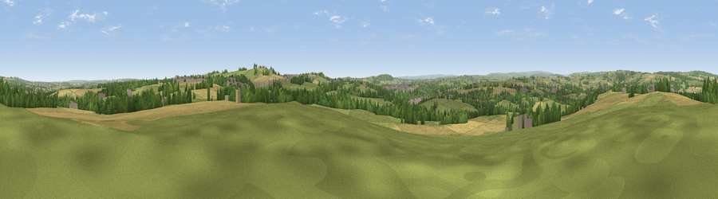

Viewpoint near Byers Green
#13606 in England · top 29% of its area beats it · near Byers GreenThe view, rendered

A 360° render of this exact spot computed from the terrain model, tree cover and land cover — summer colours, afternoon light, calibrated against photographs of famous viewpoints. Real trees, hedges and buildings will differ in detail.
The panorama
Grey silhouette: terrain skyline in each direction (720 bearings, Earth curvature and refraction included). Dashed green: skyline with trees (+15 m) and buildings (+8 m) as obstacles. Blue strip: how far the ground is visible on each bearing.
Where the view opens
Wedge length = distance to the farthest visible ground on that bearing (vegetation-aware). Rings at 10, 25 and 50 km.
What fills the view
51% grassland · 27% cropland · 18% woodland · 4% built-up
Angular shares of the visible panorama (visual magnitude), not map area. Landscape diversity 0.50 (0–1 Shannon).
Key numbers
More beautiful places nearby
The staircase of upgrades: each row has a higher view potential than everything closer. Driving times are estimates from straight-line distance, calibrated against real road routing — check an actual route before setting out.
| Place | Direction | Drive | Score |
|---|---|---|---|
| Westerton Hill | SE · 2 km | ~6 min | 69.0 |
| Viewpoint near Crook | NW · 6 km | ~12 min | 69.4 |
| Viewpoint near Billy Row | NW · 6 km | ~13 min | 70.3 |
| Viewpoint near Quarrington Hill | ENE · 12 km | ~23 min | 73.1 |
| Pontop Pike | NNW · 22 km | ~36 min | 77.8 |
| Viewpoint near Newton Under Roseberry | ESE · 36 km | ~54 min | 78.3 |
| Viewpoint near Lazenby | ESE · 37 km | ~56 min | 82.1 |
| Viewpoint near Lazenby | ESE · 37 km | ~56 min | 86.4 |
54.68774, -1.65754 · source: screening · position refined by local search. Computed location — check access rights before visiting.